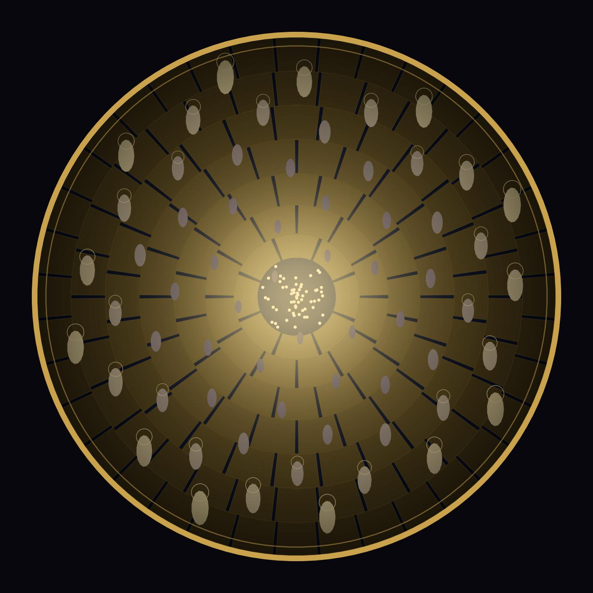
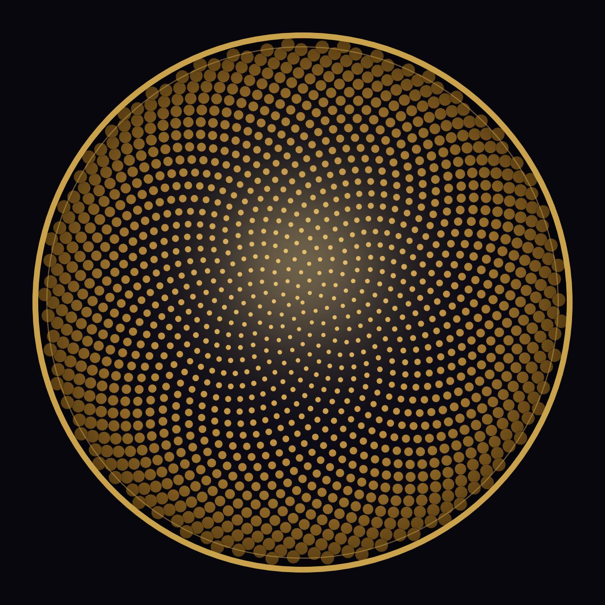
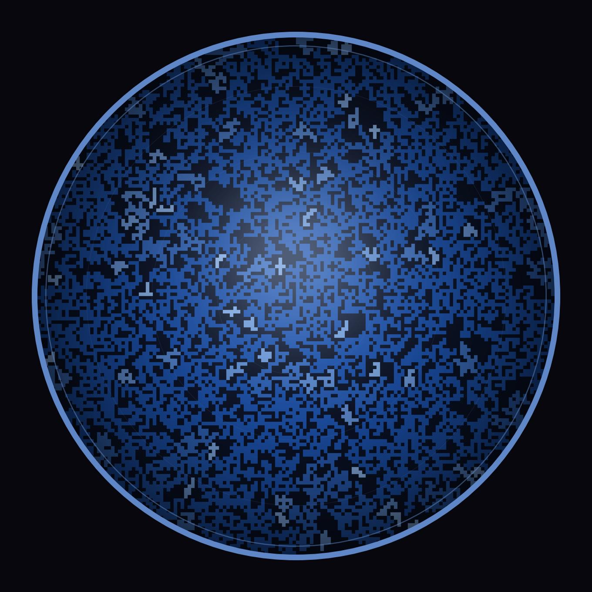
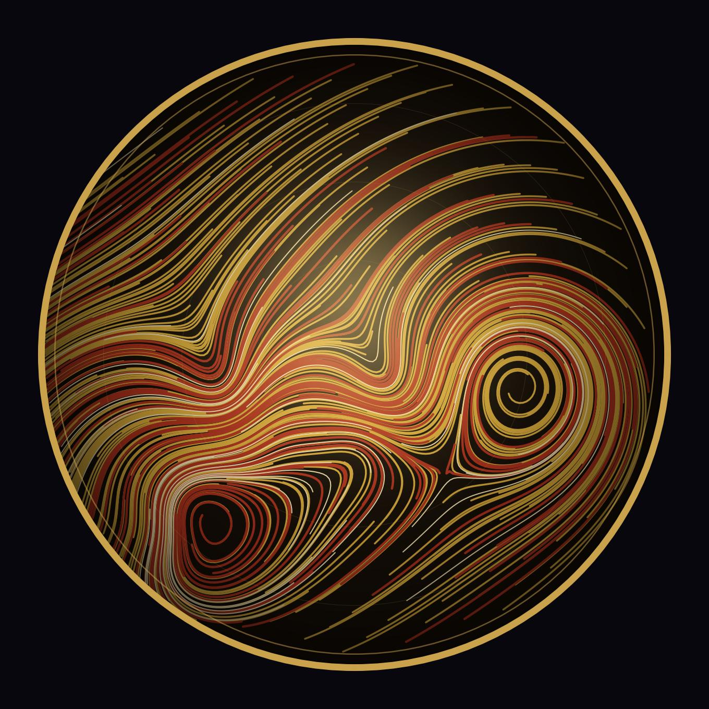
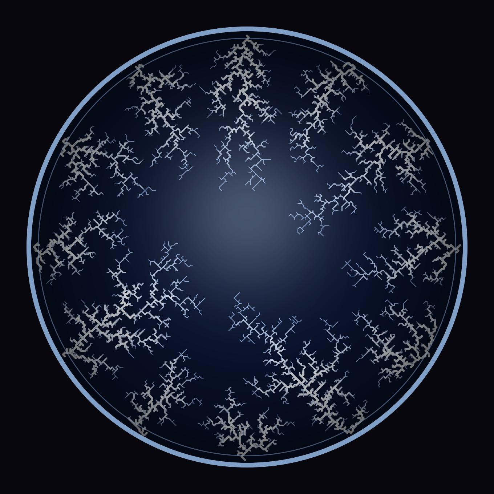
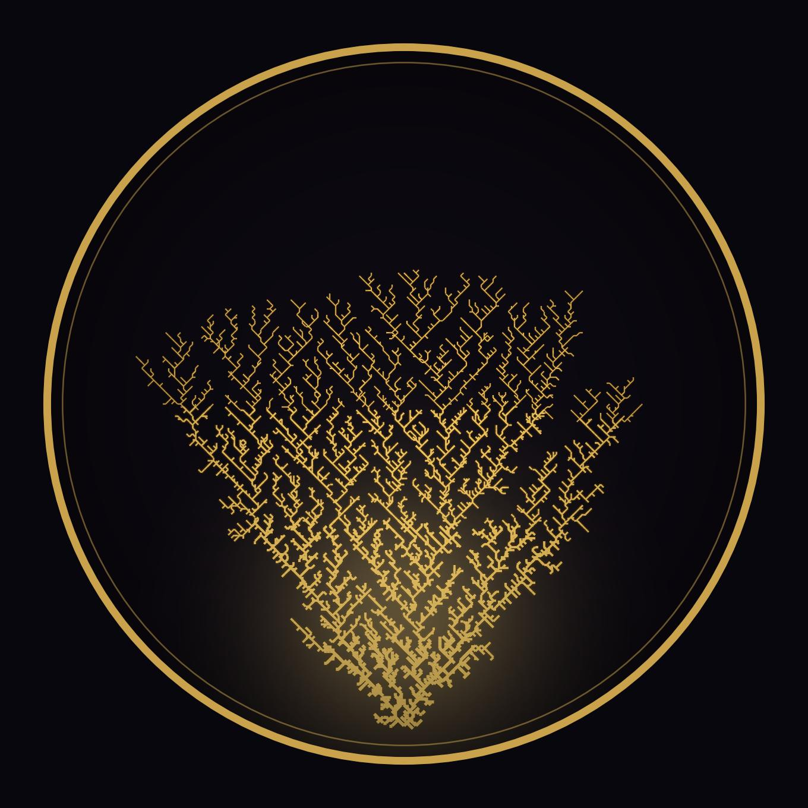
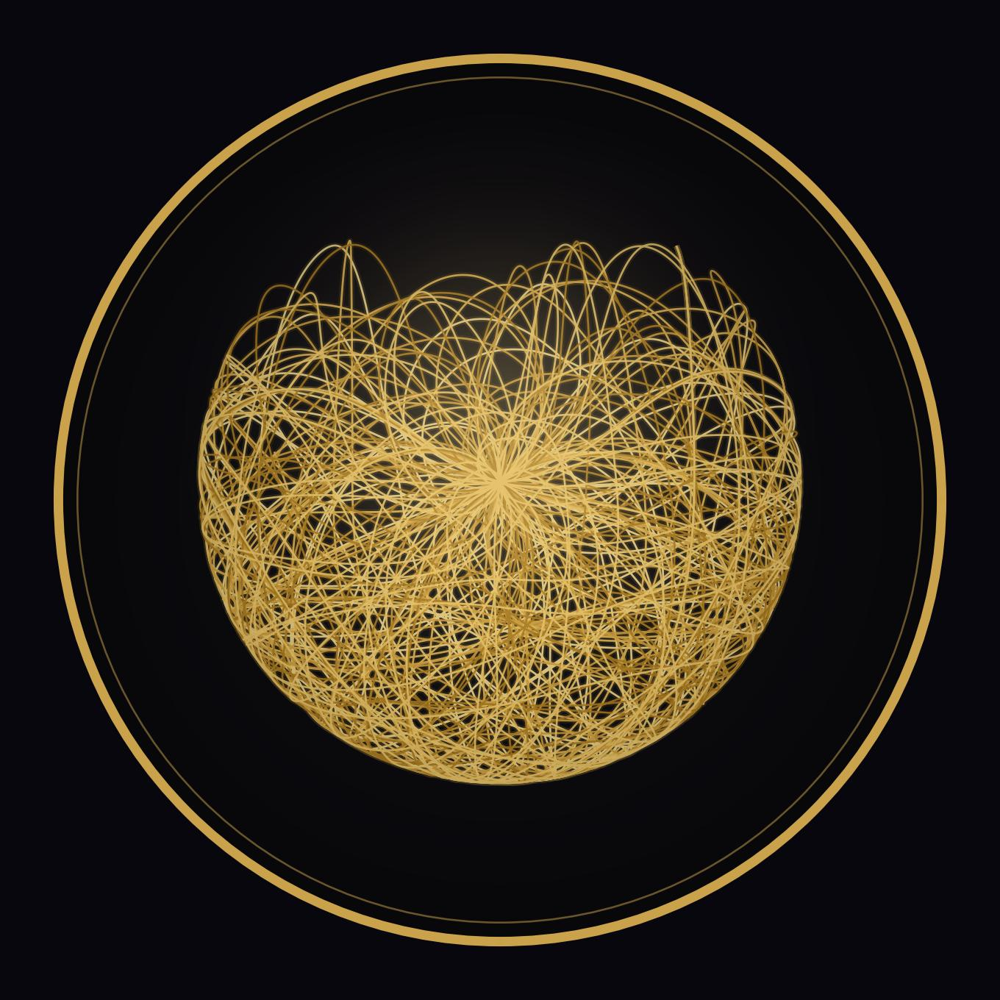
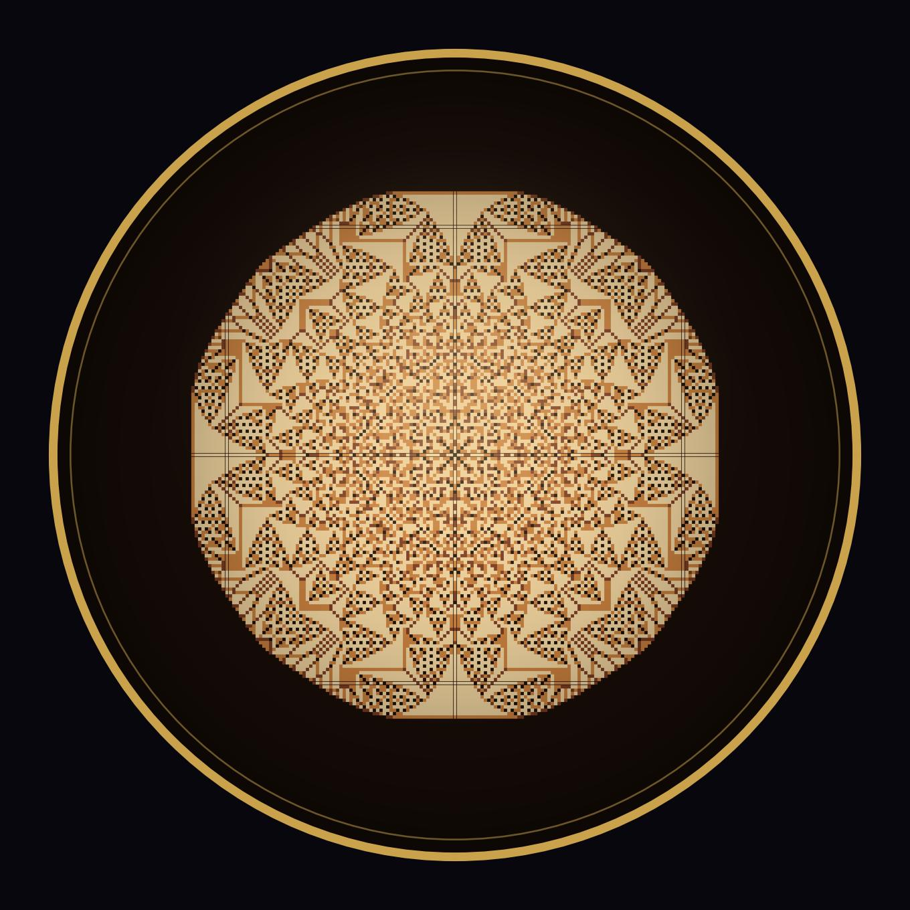
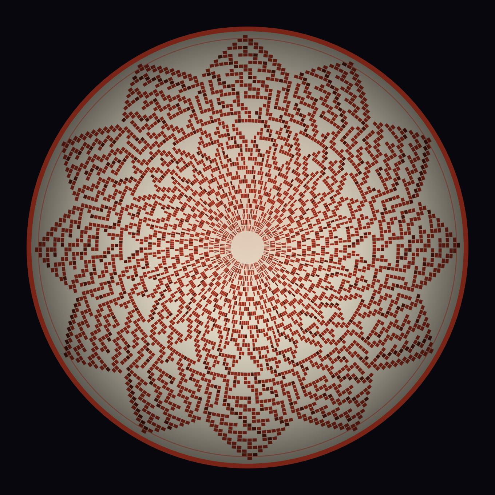
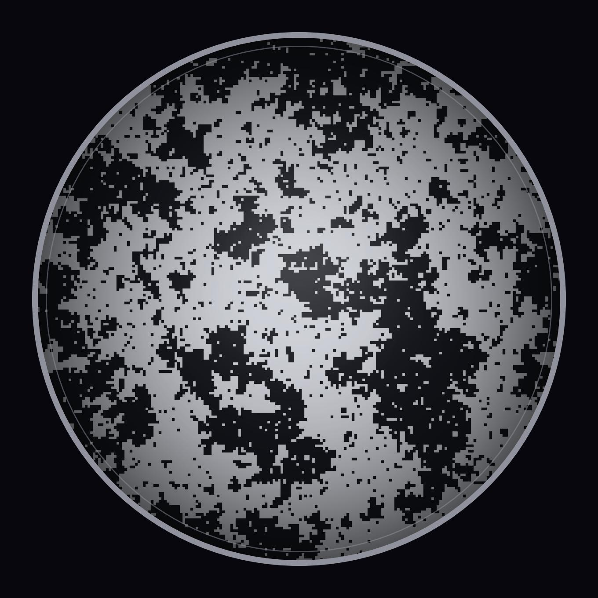

Окно Овертона · Второе небо

Купол обращён не в небо, — а к тем, кто стоит под ним.
Спутниковая тарелка всю жизнь принимала чужой сигнал. Мы возвращаем ей купол.
На фасадах висят миллионы серых чаш — умирающая инфраструктура приёма, самый массовый и самый слепой предмет города. Но каждая из них — готовый купол: маленький свод, вынесенный на улицу и обращённый к небу, которое больше не слушают.
Авангард столетней давности строил новый мир с нуля и мерил форму функцией: клуб был не зданием, а «социальным конденсатором» — местом, где люди сходятся. Городу будущего строиться заново не нужно — он уже построен. Его новая архитектура — преображение того, что уже есть.
И функция этих куполов — та же, древняя, храмовая: собирать людей. В любви друг к другу и к самой жизни вокруг. Всё остальное — новые правила формы и графики — служит только этому.

Каждый узор ведёт не рука, а закон природы. У каждого — своя стихия, своя палитра и родословная от русского промысла. И у каждого — свой повод собраться под ним.








Купол оправдан не красотой, а тем, что он собирает. Форму мы выводим из того, ради чего люди под неё встают.
Мы не строим заново. Мы расписываем то, что уже висит на стенах, — и серое, единообразное становится своим и живым.
Промысел — это правило, внутри которого каждый экземпляр неповторим. Гжель никогда не повторяет узор; она повторяет закон.
Узор ведёт не наша рука и не слепой алгоритм, а закон природы: перколяция, диффузия, критическое состояние — те же силы, что рисуют мороз.
Наш купол обращён не в небо. Он обращён к тем, кто стоит под ним, — и потому он второе небо, а не первое.
Город будущего не строят. Его расписывают — и он начинает собирать нас вместе.